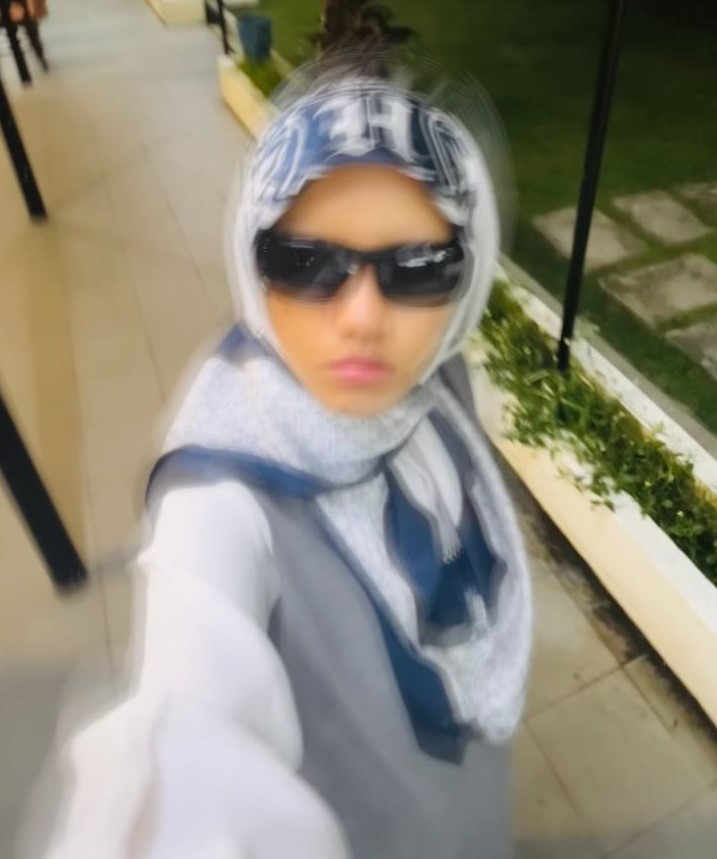

Adriana's Profile
a data engineering student
I was once employed temporary in data entry and food services. As a result, I am confident in my ability to manage the service department's workload. Aside from that, I'm involved in one of my all-time favorite fields: music.
Throughout secondary school, I participated in numerous domestic and international music competitions, winning practically all of them. Now, I'm continuing my studies in information technology. Aside from the increasing workload, I am especially interested in creating software along with new technologies. I am confident that I will be capable to complete the course I have picked.Certificate & Awards
- BRONZE AWARD
-
Matriculation Social Science Carnival (MASOC), KMKN, September 2022.
- CERTIFICATE OF PARTICIPATION
-
Townhall Mahasiswa & Anak Muda Padang Terap, SK Kuala Nerang, October 2022.
- SILVER AWARD
-
Innovation Festival (INNOFEST), KMKN, February 2023.
Experience
- Pre-Internship (vendor)
-
Urusetia Majlis Angkatan Tentera, MINDEF, Kementerian Pertahanan Malaysia, April - July 2022.
- Food Server
-
Fiske Steakhouse & Asam Pedas Melaka, Medan Selera AU2 C, July - Sep 2023.
Background Information
Skills
- Creativity.
- Communication.
- Critical Thinking.
- Teamwork.
- Adaptability.
Hobbies
- listening to music.
- watching movies/drama.
- eating.
- sleep.
- drawing.
Education
- Bachelor of Science Computer (Data Engineering) with Honor.
- Universiti Teknologi Malaysia (UTM), Skudai, Johor Bahru, Johor.
- Foundation of Engineering and Technology in First Class.
- CGPA : 3.92, MUET : 4.0, Kolej Mara Kuala Nerang (KMKN), Padang terap, Kedah.
- First Class Graduates of MRSM in General Biology courses.
- SPM : 6As, PT3 : 7As, MRSM Felda Trolak, Sungkai, Perak.
- © HTML5 UP
- Design: Adriana Jefri